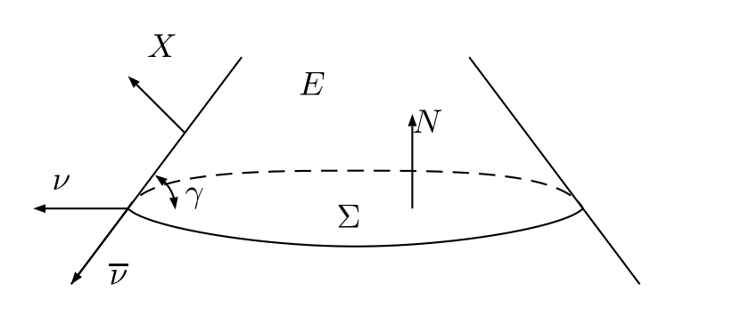

Christodoulou-Yau estimate for the Willmore energy of surface with boundary
Definition
| \(\displaystyle \int_{\Sigma} (| \nabla f|^2 - (|A|^2 + {\text{Ric}} (N, N)) f^2) - \int_{\partial \Sigma} Qf^2 \geqslant 0 ,\) | (1) |
where on \(\partial \Sigma \cap M\),
| \(\displaystyle Q = \frac{1}{\sin \gamma} \hspace{0.17em} B (\bar{\nu}, \bar{\nu}) + \cot \gamma A (\nu, \nu) .\) | (2) |
The figure is from [Li20].

We follow [CY88]. Let \(\tilde{\Sigma}\) be a compact Riemann surface from \(\Sigma\) by attaching a conformal disc at any connected component of \(\partial M\). Then there exists a non-constant holomorphic map \(\widetilde{\psi :} \tilde{\Sigma} \to \mathbb{S}^2\) such that
| \(\displaystyle \deg (\tilde{\psi}) \leqslant [\tfrac{g + 3}{2}],\) | (3) |
where \([x]\) denotes the greatest integer less than or equal to \(x\). Let \(\psi\) be the restriction to \(\Sigma\). Composing \(\psi\) with a conformal diffeomorphism of \(\mathbb{S}^2\) we can assume that
| \(\displaystyle \int_{\Sigma} \psi_i = 0, i = 1, 2, 3,\) | (4) |
where each \(\psi_i\) is a coordinate function of \(\psi\). We have first that
| \(\displaystyle \sum_i \int_{\Sigma} | \nabla \psi_i |^2 \leqslant \int_{\tilde{\Sigma}} | \nabla \tilde{\psi} |^2 \leqslant 8 \pi \deg (\tilde{\psi}) \leqslant 8 \pi [\tfrac{g + 3}{2}] .\) | (5) |
Summing up we have
| \(\displaystyle \sum_{i = 1}^3 \int_{\Sigma} | \nabla \psi_i |^2 \geqslant \int_{\Sigma} (|A|^2 + {\text{Ric}} (N, N)) f^2 + \int_{\partial \Sigma} Q. \) | (6) |
Using Schoen-Yau trick, we have that
| \(\displaystyle \operatorname{Ric} (\nu) + |A|^2 = \tfrac{1}{2} R_M + \tfrac{1}{2} |A^o |^2 + \tfrac{3}{4} H^2 - K.\) | (7) |
From [Li20, (3.8)],
| \(\displaystyle \sin \gamma (\tfrac{1}{\sin \gamma} B (\bar{\nu}, \bar{\nu}) + \cot \gamma A (\nu, \nu) + \kappa) = H_{\partial M} = \sin \gamma (Q + \kappa) .\) | (8) |
Inserting these relations into right hand of (6), we have
where we have used lower bounds on \(R_M \geqslant \Lambda_1\), \(H_{\partial M} \geqslant \Lambda_2\) and Gauss-Bonnet theorem with a boundary. So
| \(\displaystyle \tfrac{3}{4} \int_{\Sigma} H^2 + \tfrac{1}{2} \Lambda_1 | \Sigma | + \tfrac{1}{\sin \gamma} \Lambda_2 | \partial \Sigma | \leqslant 2 \pi \chi (\Sigma) + 8 \pi [\tfrac{g + 3}{2}] .\) | (9) |
D. Christodoulou and S.-T. Yau. Some remarks on the quasi-local mass. In James A. Isenberg, editor, Contemporary Mathematics, volume 71, pages 9–14. American Mathematical Society, Providence, Rhode Island, 1988.
Chao Li. A polyhedron comparison theorem for 3-manifolds with positive scalar curvature. Invent. Math., 219(1):1–37, 2020.